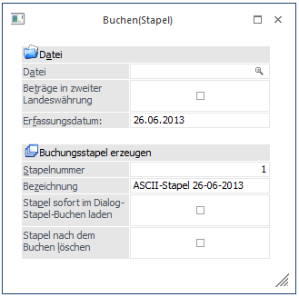

Im Menüpunkt…
1 WinLine FIBU
1 Buchen
1 Buchen
1 Stapel
… können Fremddateien in das WinLine Buchungsprogramm eingelesen werden.

Ø Datei
Geben Sie den Pfad, auf dem sich die ASCII-Datei befindet, ein. Durch Drücken der F9-Taste können Sie nach dem gewünschten Pfad suchen.
Über die Checkbox
Ø Beträge in zweiter Landeswährung
kann gesteuert werden, in welcher Währung die Daten in der Übernahmedatei vorhanden sind.
ü Inaktiv:
Ist die Checkbox
deaktiviert, werden die Beträge "normal" behandelt und ohne Umrechnung
gebucht.
ü Aktiv:
Ist die Checkbox aktiv,
werden die Beträge auf Basis der Einstellungen im Mandantenstamm auf die dort
hinterlegte Landeswährung 1 umgerechnet.
Beispiel
In der Datei steht ein Wert von 1.000,--, im Mandantenstamm ist als Landeswährung 1 EURO, als Landeswährung 2 USD eingetragen.
Wie wird der Wert in der FIBU gebucht?
Wenn die Checkbox aktiviert wurde, dann werden 1.000,-- USD gebucht.
Wenn die Checkbox nicht aktiviert wurde, dann werden 1.000,-- EUR gebucht.
Durch Anklicken des Editieren-Buttons kann die Übernahmedatei nochmals überarbeitet werden.
Durch Anklicken des Journal-Buttons kann der Inhalt der Übernahmedatei in Journalform ausgedruckt werden, wobei der Ausdruck entweder auf den Bildschirm oder auf den Drucker erfolgen kann.
Buchungsstapel erzeugen
Ø Stapelnummer
Angabe jener Stapelnummer, unter der der Stapel mit den Buchungen aus der Übernahmedatei gespeichert werden soll (hierzu können die "+" sowie die "-"-Taste verwendet werden, um die nächsten freien Stapelnummer zu finden). Es können die Stapel 1 bis 99 und 500 bis 999 verwendet werden.
Ø Bezeichnung
In diesem Feld kann die Bezeichnung angegeben werden, unter der der Stapel gespeichert werden soll.
Ø Stapel sofort im Dialog-Stapel-Buchen laden
Wird diese Checkbox aktiviert, so wird sofort nach Speichern der Importdaten im Stapel dieser im Dialog-Stapel-Buchen geladen und kann weiterbearbeitet oder gleich verbucht werden.
Ø Stapel nach dem Buchen löschen
Ist Checkbox aktiviert, so wird der Stapel nach dem erfolgreichen Verbuchen wieder gelöscht. Somit kann der Stapel nicht versehentlich mehrfach verbucht werden.
Durch Drücken der F5-Taste wird die Übernahmedatei im angegebenen Stapel gespeichert. Vorher erfolgt eine Plausibilitätsprüfung, bei der festgestellt wird, ob die Konten vorhanden sind, ob die Buchungen in das aktuelle Wirtschaftsjahr passen und ob die Buchungsdatei den richtigen Aufbau hat. Werden Fehler festgestellt, wird ein Prüfprotokoll ausgedruckt, anhand dessen die Fehler ausgebessert werden können (durch Anklicken des Editieren-Buttons).
Die Fremddatei muss folgenden Aufbau haben:
Die Felder werden jeweils mit Beistrichen (Komma) getrennt. Das Format muss ASCII sein.
Felder, die bei allen Buchungen gleich sind
Ø Buchungsart
2stellig, alphanumerisch. Folgende Buchungsarten können eingelesen werden:
B - Sachbuchung
DF - Debitorenfaktura
DZ - Debitorenzahlung
KF - Kreditorenfaktura
KZ - Kreditorenzahlung
EB - Eröffnungsbuchung
AB - Abschlussbuchung
Ø Soll
20stellig, Konto Soll
Ø Haben
20stellig, Konto Haben
Ø Text
20stellig, alphanumerisch
Ø Datum
TT-MM-JJ, Buchungsdatum
Ø Belegnummer
20stellig, alphanumerisch, es dürfen keine Sonderzeichen wie ' oder % verwendet werden.
Ø Betrag
11 Stellen + 2 Nachkommastellen, Bruttobetrag
Ø MW - Steuercode
6stellig, alphanumerisch
U# für Umsatzsteuer
V# für Vorsteuer
danach schließt die Steuerzeile (1-99) an
Beispiel 1
U#2 bedeutet, es wird auf den Umsatzsteuersatz der Steuerzeile 2 zugegriffen
Ø Steuerbetrag
11 Stellen + 2 Nachkommastellen, Steuerbetrag für Buchung auf Automatikkonto
Felder der Erfassungszeile Offene Posten (Buchungsart DF und KF)
Ø Fakturen-Nummer
20stellig, alphanumerisch, es dürfen keine Sonderzeichen wie ' oder % verwendet werden.
Ø Valutadatum
10stellig in der Form TT-MM-JJJJ
Ø Skontoprozent 1
2 Stellen + 2 Nachkommastellen
Ø Skontotage 1
3stellig
Ø Nettotage
3stellig
Ø OP-Text
30stellig, alphanumerisch
Ø Steuerzeile
2stellig. Eingabe der Steuerzeile für die Skontoautomatik
Ø Bemessungsgrundlage
11 Stellen + 2 Nachkommastellen, Eingabe der Bemessungsgrundlage für die Skontoautomatik
Die beiden Eingabefelder "Steuerzeile" und "Bemessungsgrundlage" wiederholen sich dreimal und werden durch LEERZEICHEN getrennt!
Beispiel 2
...,1 1000.00 2 500.00 0 0.00,...
Diese Eintragung bedeutet, dass zwei Bemessungen mit zwei Steuerzeilen aus der Fakturierung angesprochen wurden.
Ø Fremdwährungscode
2stellig, Fremdwährungscode, der in der Fremdwährungstabelle hinterlegt ist.
Ø Fremdwährungsbetrag
11 Stellen + 2 Nachkommastellen
Ø Skontoprozent 2
2 Stellen + 2 Nachkommastellen
Ø Skontotage 2
3stellig
Felder für Erfassungszeilen mit OP-Zahlungen
Ø Fakturen-Nummer
20stellig, alphanumerisch, es dürfen keine Sonderzeichen wie ' oder % verwendet werden.
Ø Valutadatum
10stellig in der Form TT-MM-JJJJ
Ø Skonto berechnen
J oder N - wenn J eingetragen ist, wird der Skontobetrag automatisch vom Skontoprozentsatz 1 (wenn die Zahlung innerhalb der Frist erfolgte) berechnet und in das nächste Feld gestellt. Wenn N eingetragen ist, muss ein evtl. Skontobetrag im nächsten Feld eingetragen werden.
Ø Skontobetrag
11 Stellen + 2 Nachkommastellen. Abhängig vom Eintrag im Feld "Skonto berechnen".
Ø OP-Text
30stellig, alphanumerisch
Ø Fremdwährungscode
2stellig, Fremdwährungscode, der in der Fremdwährungstabelle hinterlegt ist.
Ø Fremdwährungsbetrag
11 Stellen + 2 Nachkommastellen
Ø Fremdwährungs-Skontobetrag
11 Stellen + 2 Nachkommastellen
Beispiel für Datensätze mit und ohne OP-Informationen
DF,230A001,8990,F7G 100-FA,15-12-2012,100-FA,2300.00,,0.00
100-FA,15-12-2012,2,7,30,Faktura 100-FA,1 1000.00 2 2000 0 0.00,,,1,14
(steht in der ASCII-Datei in einer Zeile!!!)
B,8990,4000,Splitbuchung,15-12-2012,100-FA,1200.00,U#2,200.00
B,8990,4000,Splitbuchung,15-12-2012,100-FA,1100.00,U#1,100.00
DZ,2800,230A001, Zahlung,19-12-2012,100-FA,2274.00,,0.00,100-FA,19-12-2012, N,26.00,Zahlung,,0.00,0.00
(steht in der ASCII-Datei in einer Zeile!!!)
Achtung
Werden Zahlungen mit Skontoabzug über die Stapelbuchhaltung gebucht, muss der Skontobetrag manuell gebucht werden. Es erfolgen keine automatischen Buchungen.
Hinweis
Beim Erzeugen eines Buchungsstapels aus dem ASCII-Stapel-Buchen wird jetzt das OP-Kennzeichen aus dem Debitor bzw. Kreditor in den OP geschrieben.